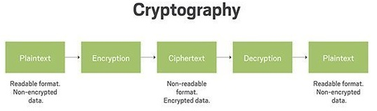

Cryptography is the practice and study of techniques for secure communication in the presence of third parties called adversaries. More generally, cryptography is about constructing and analyzing protocols that prevent third parties or the public from reading private messages.
Cryptography prior to the modern age was effectively synonymous with encryption, the conversion of information from a readable state to apparent nonsense. The originator of an encrypted message shares the decoding technique only with intended recipients to preclude access from adversaries.
A classical cipher is a type of cipher that was used historically but now has fallen, for the most part, into disuse. he term includes the simple systems used since Greek and Roman times, the elaborate Renaissance ciphers, World War II cryptography such as the Enigma machine and beyond.
Source: Wikipedia
Steganography is the practice of concealing a file, message, image, or video within another file, message, image, or video.
Whereas cryptography is the practice of protecting the contents of a message alone, steganography is concerned with concealing the fact that
a secret message is being sent as well as concealing the contents of the message.
The advantage of steganography over cryptography alone is that the intended secret message does not attract attention to itself as an object of scrutiny.
The first recorded use of the term was in 1499 by Johannes Trithemius in his Steganographia, a treatise on cryptography and steganography, disguised as a book on magic. Generally, the hidden messages appear to be (or to be part of) something else: images, articles, shopping lists, or some other cover text. For example, the hidden message may be in invisible ink between the visible lines of a private letter.
Source: Wikipedia
A cipher is the algorithm used for performing encryption or decryption. To encipher or encode is to convert information into cipher or code.
When using a cipher the original information is known as plaintext, and the encrypted form as ciphertext. The ciphertext message contains all the information of the plaintext message, but is not in a format readable by a human or computer without the proper mechanism to decrypt it.
Discover the mysterious world of cryptography by exchanging encoded messages with your friends thanks to our classical ciphers!